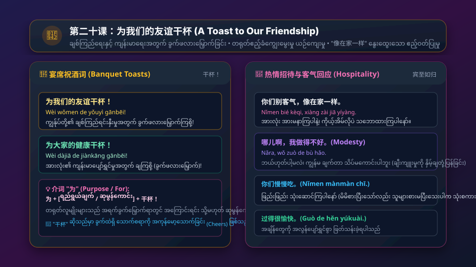

ချစ်ကြည်ရေးနှင့် ကျန်းမာရေးအတွက် ခွက်ဖလားမြှောက် ဂုဏ်ပြုဆုတောင်းခြင်း • တရုတ်ဧည့်ဝတ်ပြုမှု (像在家一样) • အခြေအနေပြ အဖြည့်ပုဒ် (状态补语: 做得真好吃 / 玩儿得很愉快) • ကံပုဒ်ပါရှိချိန် ကြိယာထပ်ခါရွတ်ဆိုရသည့် စည်းမျဉ်း (他说汉语说得很好) • Volume 1 ၏ နောက်ဆုံးဂုဏ်ပြုသင်ခန်းစာ
အသံဖိုင်ခလုတ်ကို နှိပ်၍ သဘာဝကျကျ အသံထွက်ကို လေ့လာပါ
请这儿坐。
Qǐng zhèr zuò.
ချင်း ကျော့ ဇို့။
ဒီနေရာမှာ ထိုင်ပါခင်ဗျာ/ရှင့်။ (Please take a seat here)
我过得很愉快。
Wǒ guò de hěn yúkuài.
ဝေါ် ကော် တ ဟိန် ယွီခွိုက်။
ကျွန်တော် အချိန်တွေကို အလွန်ပျော်ရွှင်စွာ ဖြတ်သန်းခဲ့ရပါတယ်။
您喜欢喝什么酒？
Nín xǐhuan hē shénme jiǔ?
နင်း ဆီဟွမ်း ဟယ် ဆိန်မ ကျို့?
လူကြီးမင်း ဘာအရက်/သောက်စရာ ကြိုက်နှစ်သက်ပါသလဲခင်ဗျာ။
为我们的友谊干杯！
Wèi wǒmen de yǒuyì gānbēi!
ဝေ ဝေါ်မိန် တ ယို့ယိ ကန်းပွေး!
ကျွန်ုပ်တို့၏ ချစ်ကြည်ရင်းနှီးမှုအတွက် ခွက်ဖလားမြှောက်ကြစို့ / ချကြစို့!
这个鱼做得真好吃。
Zhè ge yú zuò de zhēn hǎochī.
ကျော့ က ယွီ ဇို့ တ ကျိန် ဟောင်ချစ်။
ဒီငါးဟင်းက ချက်ထားတာ တကယ် အရသာရှိလိုက်တာ။ (အခြေအနေပြ အဖြည့်ပုဒ်)
你们别客气，像在家一样。
Nǐmen bié kèqi, xiàng zài jiā yíyàng.
နီမိန် ပျယ် ခော့ချိ၊ ရှန့် စိုက် ကျား ယိယန့်။
အားလုံး အားမနာကြပါနဲ့၊ ကိုယ့်အိမ်မှာလိုပဲ သဘောထားကြပါနော်။
我做菜做得不好。
Wǒ zuò cài zuò de bù hǎo.
ဝေါ် ဇို့ ဆိုက် ဇို့ တ ပု ဟောင်။
ကျွန်မ ဟင်းချက်တာ သိပ်မကောင်းလှပါဘူး။ (နှိမ့်ချယဉ်ကျေးစကား)
你们慢慢吃。
Nǐmen mànmàn chī.
နီမိန် မန့်မန့် ချစ်။
ဖြည်းဖြည်း သုံးဆောင်ကြပါနော်။ (Take your time eating)

ဇာတ်ကောင်တစ်ဦးချင်းစီ၏ အသံကို သီးသန့်နားထောင်နိုင်ပါသည်
李先生，请这儿坐。
Lǐ xiānsheng, qǐng zhèr zuò.
မစ္စတာလီ၊ ဒီနေရာမှာ ထိုင်ပါခင်ဗျာ။
谢谢！
Xièxie!
ကျေးဇူးတင်ပါတယ်!
这两天过得怎么样？
Zhè liǎng tiān guò de zěnmeyàng?
ဒီရက်ပိုင်း အချိန်တွေ ဘယ်လို ဖြတ်သန်းခဲ့ရပါသလဲခင်ဗျာ။
过得很愉快。
Guò de hěn yúkuài.
အရမ်း စိတ်ချမ်းမြေ့ ပျော်ရွှင်စွာ ဖြတ်သန်းခဲ့ရပါတယ်ခင်ဗျာ။
您喜欢喝什么酒？
Nín xǐhuan hē shénme jiǔ?
လူကြီးမင်း ဘာအရက်/သောက်စရာ ကြိုက်ပါသလဲခင်ဗျာ။
啤酒吧。
Píjiǔ ba.
ဘီယာပဲ သောက်ပါ့မယ်။
您尝尝这个菜怎么样。
Nín chángchang zhè ge cài zěnmeyàng.
ဒီဟင်းလေးကို မြည်းကြည့်ပါဦး၊ ဘယ်လိုနေသလဲခင်ဗျာ။
很好吃。
Hěn hǎochī.
အရမ်း အရသာရှိပါတယ်ခင်ဗျာ။
吃啊，别客气。
Chī a, bié kèqi.
သုံးဆောင်ပါခင်ဗျာ၊ အားမနာပါနဲ့။
不客气。
Bú kèqi.
အားမနာပါဘူးခင်ဗျာ။
来，为我们的友谊干杯！
Lái, wèi wǒmen de yǒuyì gānbēi!
ကဲ၊ ကျွန်ုပ်တို့ရဲ့ ချစ်ကြည်ရေးအတွက် ခွက်ဖလားမြှောက်ကြစို့ (ချကြစို့)!
为大家的健康干杯！
Wèi dàjiā de jiànkāng gānbēi!
အားလုံးရဲ့ ကျန်းမာရေးအတွက် ချကြစို့!
干杯！
Gānbēi!
ချကြစို့ (ခွက်ကုန်မော့ကြစို့)!
我们先喝酒吧。
Wǒmen xiān hē jiǔ ba.
ငါတို့ အရင် သောက်စရာလေး သောက်ကြတာပေါ့။
这个鱼做得真好吃。
Zhè ge yú zuò de zhēn hǎochī.
ဒီငါးဟင်းက ချက်ထားတာ တကယ် အရသာရှိတာပဲ။
你们别客气，像在家一样。
Nǐmen bié kèqi, xiàng zài jiā yíyàng.
အားလုံး အားမနာကြနဲ့နော်၊ ကိုယ့်အိမ်လိုပဲ သဘောထားကြပါ။
我们不客气。
Wǒmen bú kèqi.
ကျွန်တော်တို့ အားမနာပါဘူး အန်တီ။
吃饺子吧。
Chī jiǎozi ba.
ဒမ်ပလင်း စားကြပါဦး။
我最喜欢吃饺子了。
Wǒ zuì xǐhuan chī jiǎozi le.
သမီးက ဒမ်ပလင်းဆို အကြိုက်ဆုံးပဲ။
听说你很会做日本菜。
Tīngshuō nǐ hěn huì zuò Rìběn cài.
ကြားတာတော့ မင်း ဂျပန်ဟင်းချက်တာ အရမ်းတော်တယ်ဆို။
哪儿啊，我做得不好。
Nǎra, wǒ zuò de bù hǎo.
ဘယ်ဟုတ်ပါ့မလဲ၊ သမီး ချက်တာ သိပ်မကောင်းပါဘူး (နှိမ့်ချယဉ်ကျေးစကား)။
你怎么不吃了？
Nǐ zěnme bù chī le?
မင်း ဘာလို့ မစားတော့တာလဲ။
吃饱了。你们慢慢吃。
Chī bǎo le. Nǐmen mànmàn chī.
ဗိုက်ဝသွားပါပြီ။ အားလုံး ဖြည်းဖြည်း သုံးဆောင်ကြပါနော်။
စကားလုံးကတ်တစ်ခုချင်းစီတွင် အသံထွက်နှင့် အဓိပ္ပာယ်ကို လေ့လာပါ
ဖြတ်သန်းသည် / ကုန်လွန်သည်
အခြေအနေပြ ဆက်သွယ်ပုဒ်
စိတ်ချမ်းမြေ့ ပျော်ရွှင်သော
ကြိုက်နှစ်သက်သည်
...အတွက် ခွက်ဖလားမြှောက်သည်
ချစ်ကြည်ရေး / မိတ်ဆွေသံယောဇဉ်
ငါး (fish)
အရသာရှိသော (delicious)
တူသည် / ကဲ့သို့ (to resemble)
တူညီသော (same/identical)
အားလုံး / လူတိုင်း (everyone)
ကျန်းမာရေး / ကျန်းမာသော
ဒမ်ပလင်း (dumplings)
ဗိုက်ဝသော (full)
နေထိုင်သည် / လူနေမှုဘဝ
အိပ်စက်သည် (to sleep)
နောက်ကျသော / ညဉ့်နက်သော
လျှော်ဖွပ်သည် / ဆေးကြောသည်
သန့်ရှင်းသော (clean)
ဓာတ်ပုံ (photo)
စီး (မော်တော်ယာဉ် သင်္ချာပုဒ်)
တရုတ်သဒ္ဒါစည်းမျဉ်းများကို မြန်မာသဒ္ဒါနှင့် နှိုင်းယှဉ်လေ့လာပါ
လုပ်ဆောင်မှုတစ်ခု၏ အဆင့်အတန်း၊ ရလဒ် သို့မဟုတ် အခြေအနေကို ဖော်ပြလိုသောအခါ ကြိယာနောက်တွင် 得 ကို ထည့်သွင်းပြီး နာမဝိသေသနဖြင့် အကဲဖြတ်ရသည်။
我们休息得很好。
Wǒmen xiūxi de hěn hǎo.
ကျွန်တော်တို့ ကောင်းကောင်း အနားယူခဲ့ရပါတယ်။
玛丽、大卫他们玩儿得很愉快。
Mǎlì, Dàwèi tāmen wánr de hěn yúkuài.
မာရီနဲ့ ဒေးဗစ်တို့ အရမ်းပျော်ရွှင်စွာ ဆော့ကစားခဲ့ကြတယ်။
他来得不早。
Tā lái de bù zǎo.
သူ လာတာ မစောလှပါဘူး။ (不 ကို 得 နောက်တွင် ထားပါ)
这个鱼做得好吃不好吃？
Zhè ge yú zuò de hǎochī bù hǎochī?
ဒီငါးဟင်း ချက်တာ အရသာရှိရဲ့လား။
ကြိယာနောက်တွင် ကံပုဒ် (Object) ပါရှိပြီး တစ်ပြိုင်နက်တည်း အခြေအနေပြ အဖြည့်ပုဒ် 得 ကို တွဲသုံးပါက၊ ကြိယာကို ကံပုဒ်နောက်တွင် တစ်ကြိမ် ထပ်မံရွတ်ဆိုရသည်: V + O + V + 得 + Adj။
他说汉语说得很好。
Tā shuō Hànyǔ shuō de hěn hǎo.
သူ တရုတ်စကား ပြောတာ အရမ်းတော်တယ်။ (说汉语 + 说得很好)
她做饭做得很不错。
Tā zuò fàn zuò de hěn búcuò.
သူမ ထမင်းဟင်းချက်တာ အရမ်းမဆိုးဘူး (တော်တယ်)။
我写汉字写得不太好。
Wǒ xiě hànzì xiě de bú tài hǎo.
ကျွန်တော် တရုတ်စာလုံးရေးတာ သိပ်မကောင်းလှပါဘူး။
他洗衣服洗得很干净。
Tā xǐ yīfu xǐ de hěn gānjìng.
သူ အဝတ်လျှော်တာ အရမ်းသန့်ရှင်းတယ်။
他汉语说得真好，像中国人一样。
Tā Hànyǔ shuō de zhēn hǎo, xiàng Zhōngguó rén yíyàng.
သူ တရုတ်စကားပြောတာ တရုတ်လူမျိုးလိုပဲ အရမ်းတော်တာပဲ။ (像...一样)
你说得太快，我没听懂，请你说得慢一点儿。
Nǐ shuō de tài kuài, wǒ méi tīng dǒng, qǐng nǐ shuō de màn yìdiǎnr.
မင်းပြောတာ အရမ်းမြန်လို့ ငါနားမလည်လိုက်ဘူး၊ ကျေးဇူးပြုပြီး နည်းနည်းလောက် ဖြည်းဖြည်းပြောပေးပါ။
小王开车开得很好。
Xiǎo Wáng kāichē kāi de hěn hǎo.
ရှောင်ဝမ် ကားမောင်းတာ အရမ်းတော်တယ်။
昨天我和几个小朋友去划船了。孩子们很喜欢划船，他们划得很好。我坐在船上高兴极了，也像孩子一样玩儿。这一天过得真有意思！
(မြန်မာပြန်: မနေ့က ကျွန်တော် ကလေးအနည်းငယ်နဲ့အတူ လှေသွားလှော်ခဲ့ပါတယ်။ ကလေးတွေက လှေလှော်တာ အရမ်းကြိုက်ကြပြီး သူတို့ လှေလှော်တာ အရမ်းတော်ကြပါတယ်။ ကျွန်တော် လှေပေါ်မှာထိုင်ရင်း အတိုင်းမသိ ပျော်ရွှင်ခဲ့ရသလို ကလေးတစ်ယောက်လိုပဲ ဆော့ကစားခဲ့ပါတယ်။ ဒီတစ်ရက်တာ ကုန်လွန်ခဲ့တာ တကယ်ကို အဓိပ္ပာယ်ရှိလှပါတယ်!)
အဖြေမှန်ကို ရွေးချယ်ပြီး ချက်ချင်း အဖြေမှန်စစ်ဆေးနိုင်ပါသည်
၁။ "သူ တရုတ်စကား ပြောတာ အရမ်းတော်တယ်" ဟူသော ဝါကျတွင် မည်သည့်သဒ္ဒါပုံစံ မှန်ကန်သနည်း။
၂။ "အခြေအနေပြ အဖြည့်ပုဒ်" (Complement of State) ၏ အငြင်းပုံစံတွင် "不" ကို မည်သည့်နေရာတွင် ထားရမည်နည်း။
၃။ "ကျွန်ုပ်တို့၏ ချစ်ကြည်ရင်းနှီးမှုအတွက် ခွက်ဖလားမြှောက်ကြစို့" ၏ တရုတ်စကားလုံးမှာ အဘယ်နည်း။
၄။ သူတစ်ပါးက မိမိ၏ အရည်အချင်း သို့မဟုတ် ဟင်းချက်လက်ရာကို ချီးကျူးသည့်အခါ ယဉ်ကျေးနှိမ့်ချစွာ တုံ့ပြန်ငြင်းပယ်သည့် စကားမှာ အဘယ်နည်း။
သင်သည် အခြေခံအုတ်မြစ် (Pinyin & Strokes) မှသည် အခန်း (၁) မှ (၂၀) အထိ အဓိက ဝါကျပေါင်း ၁၄၀ ခု၊ နေ့စဉ်သုံး စကားပြောခန်းပေါင်း ၄၀ ခန်း၊ ဝေါဟာရပေါင်း ရာပေါင်းများစွာနှင့် စတူဒီယိုအဆင့် Neural အသံဖိုင်ပေါင်း ၁,၄၀၀ ကျော်ကို လေ့လာပြီးမြောက်ခဲ့ပြီ ဖြစ်ပါသည်။